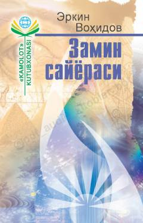

ZSErkin Vohidovning sara she'r va poemalari jamlangan she'riy to'plam.
Ushbu kitob taniqli o'zbek shoiri Erkin Vohidovning turli yillarda yozilgan she'rlari va poemalarini o'z ichiga olgan to'plamdir. Asar shoirning avvalgi yillarda nashr etilgan «Sharqiy qirg'oq» va «Tirik sayyoralar» kitoblaridagi eng sara ijod namunalarini jamlagan.